OneRec-Think: In-Text Reasoning for Generative Recommendation
Сегодня обсудим работу, в которой продолжается история с генеративными рекомендациями от Kuaishou. Авторы по-прежнему хотят заменить классический рекомендательный стек одной генеративной моделью, но теперь ещё и добавить туда LLM-ный ризонинг и диалог.
OneRec хорошо предсказывает следующий айтем по истории пользователя, но остаётся узкодоменной моделью: у неё нет широкого world knowledge, как у LLM, и нет развитых механизмов следования инструкциям и рассуждения. Поэтому авторы добавляют в OneRec-Think ризонинг, рассчитывая улучшить точность рекомендаций. Причём он используется непосредственно в процессе предсказания следующего айтема.
Тут возникают две сложности. Во-первых, LLM изначально не знает, что такое рекомендательные айтемы (видео, треки и прочее). Во-вторых, даже если заставить её «думать», она не умеет думать именно в рекомендательном домене: длинные и шумные истории пользователей ломают красивый ризонинг.
Авторы решают эти проблемы в три этапа.
Сначала делают Itemic Alignment. В словарь добавляют айтем-токены (3×8К = 24К новых токенов) и учат модель понимать айтем-токены в одном контексте с текстовыми. Делают это аккуратно: сначала замораживают бэкбон и обучают только эмбеддинги новых токенов, чтобы сохранить языковые способности модели, а затем размораживают все параметры и обучают модель совместно. Используют несколько задач, включая интерпретацию пользовательской истории, sequential next-item prediction и декодирование айтемов в текстовые описания.
Дальше — Reasoning Activation. Просто взять полную историю и попросить «подумай» не работает: слишком много шума и длинный контекст. Поэтому ризонинг-траектории извлекают хитрее. Берут таргет-айтем и с помощью внешней модели близости айтемов g(·,·) достают top-k (k=10) самых релевантных айтемов из истории пользователя. На этом подмножестве модель способна сгенерировать осмысленное объяснение того, почему пользователь взаимодействовал с таргетным айтемом. Эти объяснения затем используют как SFT-данные: уже на полной истории учат сначала генерировать ризонинг-трейс, а потом — следующий айтем.
И финальный этап — Reasoning Enhancement. Модель сэмплит несколько объяснений, а дальше под каждое считают reward — не в бинарной форме «угадал / не угадал», а на основе степени совпадения семантических токенов предсказанных кандидатов с таргетным айтемом. Для этого используется beam search по продолжениям. В результате ризонинг-траектории, ведущие к более точным предсказаниям, получают больший вес и становятся более вероятными.
В статье обсуждают, как такую модель можно внедрить при больших RPS. Авторы предлагают схему Think-Ahead: вычислительно тяжёлую часть — генерацию ризонинга и первых шагов декодирования айтем-токенов — считают офлайн и сохраняют для пользователя набор возможных префиксов.
В онлайне обычный OneRec ограничивается этим множеством и быстро достраивает финальный айтем. За счёт этого снижается стоимость инференса и одновременно в продакшн-систему переносятся знания LLM, зашитые в ризонинг-префиксы.
В результате модель не только генерирует объяснения и учитывает текстовые ограничения, но и сохраняет качество предсказания следующего айтема, что подтверждают онлайн-эксперименты.
@RecSysChannel
Разбор подготовил❣ Артём Матвеев
Сегодня обсудим работу, в которой продолжается история с генеративными рекомендациями от Kuaishou. Авторы по-прежнему хотят заменить классический рекомендательный стек одной генеративной моделью, но теперь ещё и добавить туда LLM-ный ризонинг и диалог.
OneRec хорошо предсказывает следующий айтем по истории пользователя, но остаётся узкодоменной моделью: у неё нет широкого world knowledge, как у LLM, и нет развитых механизмов следования инструкциям и рассуждения. Поэтому авторы добавляют в OneRec-Think ризонинг, рассчитывая улучшить точность рекомендаций. Причём он используется непосредственно в процессе предсказания следующего айтема.
Тут возникают две сложности. Во-первых, LLM изначально не знает, что такое рекомендательные айтемы (видео, треки и прочее). Во-вторых, даже если заставить её «думать», она не умеет думать именно в рекомендательном домене: длинные и шумные истории пользователей ломают красивый ризонинг.
Авторы решают эти проблемы в три этапа.
Сначала делают Itemic Alignment. В словарь добавляют айтем-токены (3×8К = 24К новых токенов) и учат модель понимать айтем-токены в одном контексте с текстовыми. Делают это аккуратно: сначала замораживают бэкбон и обучают только эмбеддинги новых токенов, чтобы сохранить языковые способности модели, а затем размораживают все параметры и обучают модель совместно. Используют несколько задач, включая интерпретацию пользовательской истории, sequential next-item prediction и декодирование айтемов в текстовые описания.
Дальше — Reasoning Activation. Просто взять полную историю и попросить «подумай» не работает: слишком много шума и длинный контекст. Поэтому ризонинг-траектории извлекают хитрее. Берут таргет-айтем и с помощью внешней модели близости айтемов g(·,·) достают top-k (k=10) самых релевантных айтемов из истории пользователя. На этом подмножестве модель способна сгенерировать осмысленное объяснение того, почему пользователь взаимодействовал с таргетным айтемом. Эти объяснения затем используют как SFT-данные: уже на полной истории учат сначала генерировать ризонинг-трейс, а потом — следующий айтем.
И финальный этап — Reasoning Enhancement. Модель сэмплит несколько объяснений, а дальше под каждое считают reward — не в бинарной форме «угадал / не угадал», а на основе степени совпадения семантических токенов предсказанных кандидатов с таргетным айтемом. Для этого используется beam search по продолжениям. В результате ризонинг-траектории, ведущие к более точным предсказаниям, получают больший вес и становятся более вероятными.
В статье обсуждают, как такую модель можно внедрить при больших RPS. Авторы предлагают схему Think-Ahead: вычислительно тяжёлую часть — генерацию ризонинга и первых шагов декодирования айтем-токенов — считают офлайн и сохраняют для пользователя набор возможных префиксов.
В онлайне обычный OneRec ограничивается этим множеством и быстро достраивает финальный айтем. За счёт этого снижается стоимость инференса и одновременно в продакшн-систему переносятся знания LLM, зашитые в ризонинг-префиксы.
В результате модель не только генерирует объяснения и учитывает текстовые ограничения, но и сохраняет качество предсказания следующего айтема, что подтверждают онлайн-эксперименты.
@RecSysChannel
Разбор подготовил
593 просмотров · 25 реакций
Открыть в Telegram · Открыть пост на сайте


 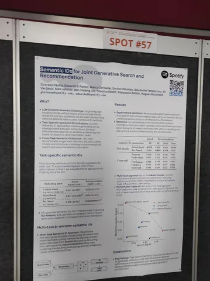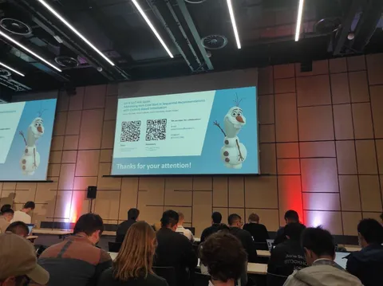
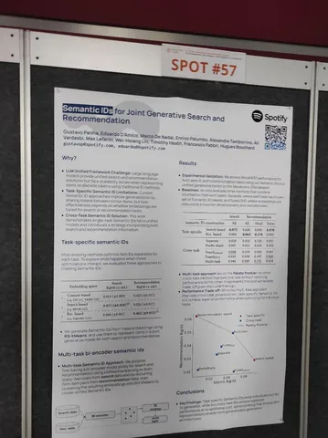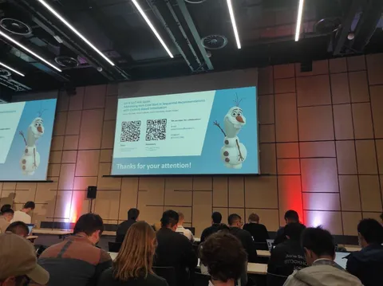


 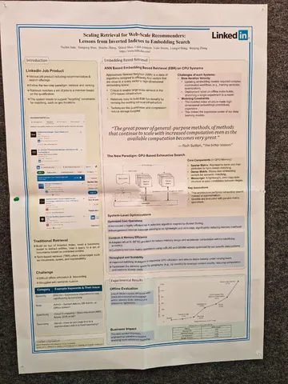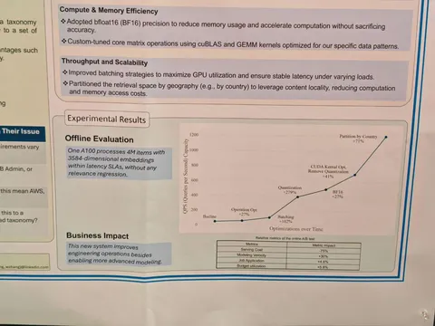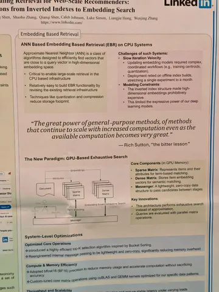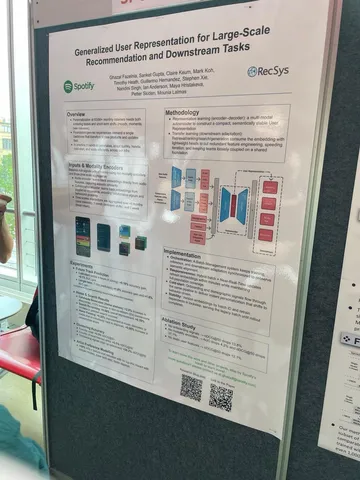
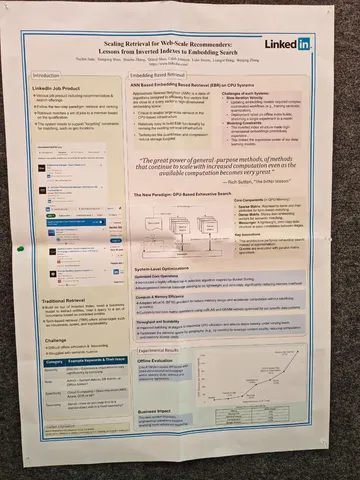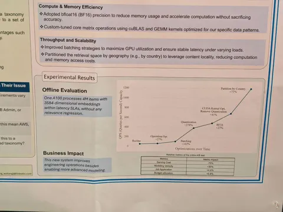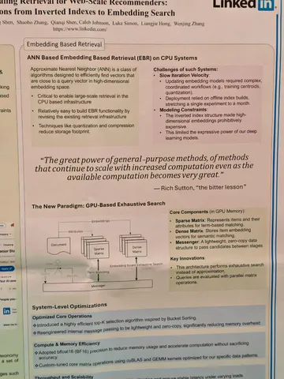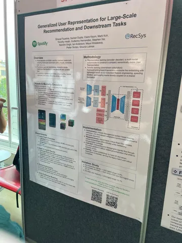 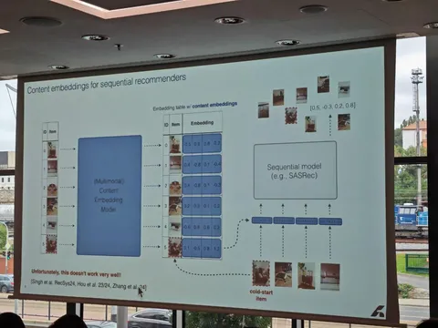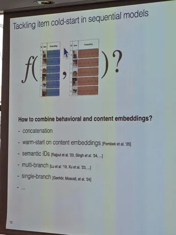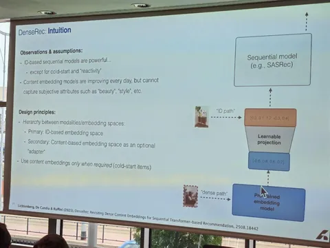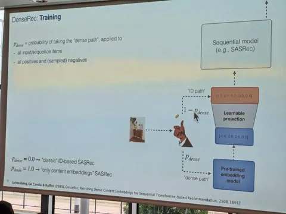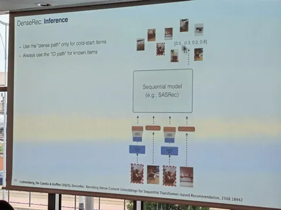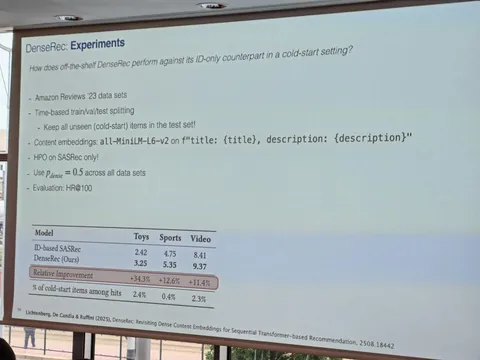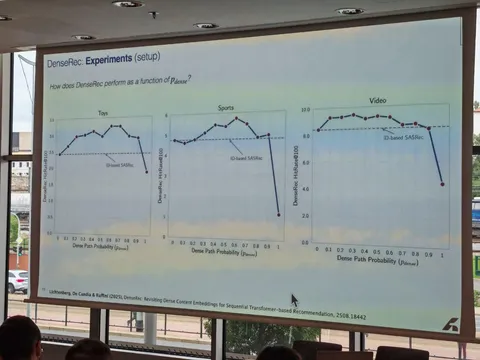
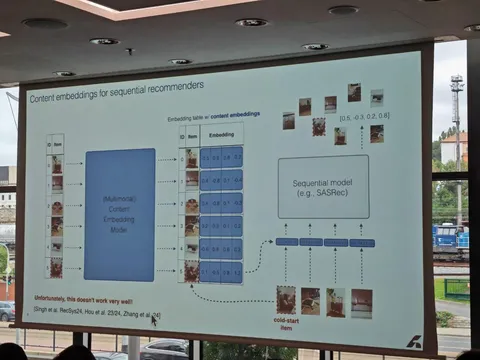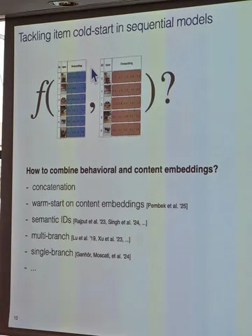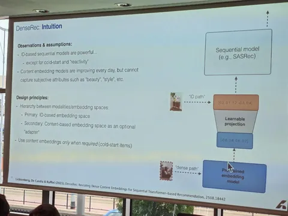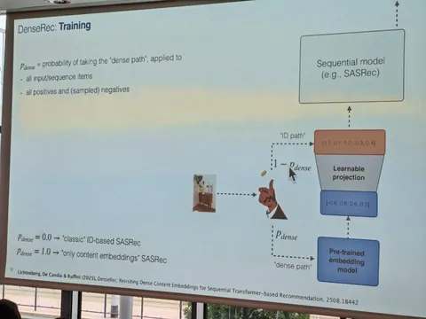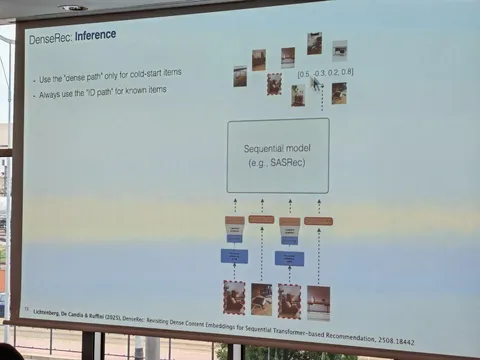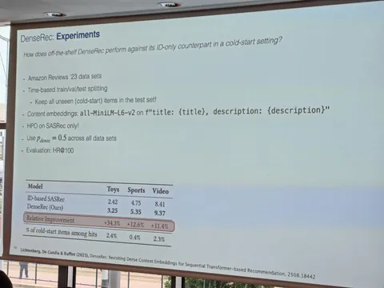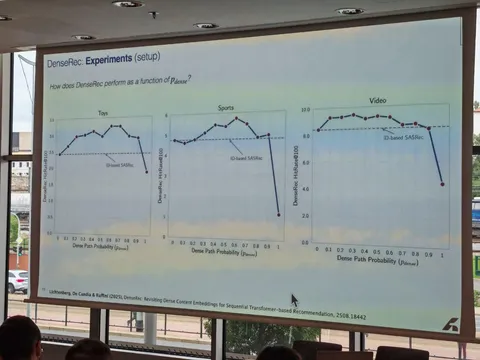